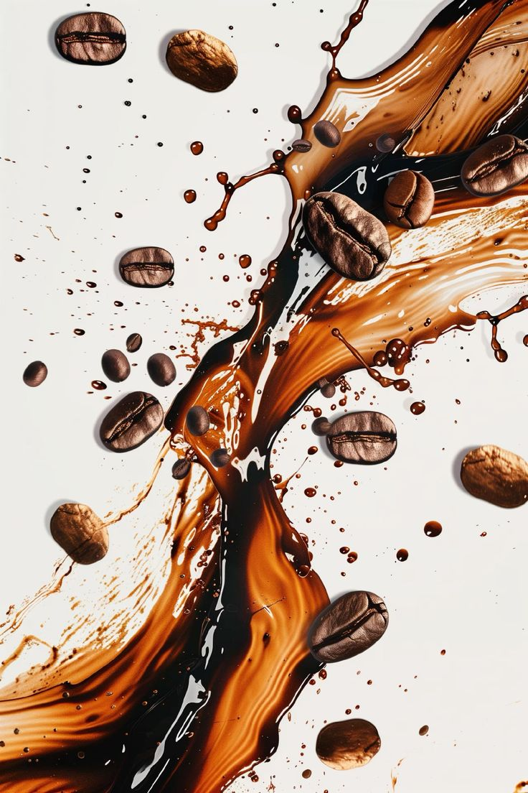
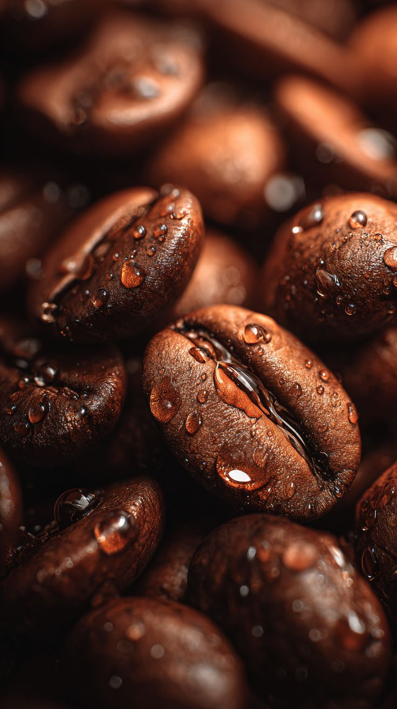
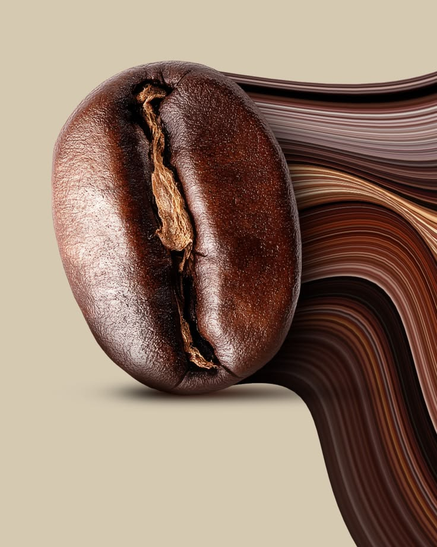

Эфиопия Иргачефф
Светлая обжаркаЯркая кислотность, ноты бергамота и жасмина. Идеально для воронки и аэропресса.
690 ₽Мы обжариваем зерно небольшими партиями каждую неделю. Вы всегда получаете свежий продукт. Вес — 250 г.

Яркая кислотность, ноты бергамота и жасмина. Идеально для воронки и аэропресса.
690 ₽
Сбалансированный вкус с нотками карамели и орехов. Универсальный вариант для любого способа заваривания.
790 ₽
Плотное тело, шоколадные ноты и легкая горчинка. Отлично подходит для эспрессо и капучино.
650 ₽Обжарка — это процесс термической обработки зеленого кофейного зерна. От степени обжарки зависят вкус, аромат и крепость напитка.
Оставьте заявку, и мы свяжемся с вами для уточнения деталей доставки или самовывоза.
Заказать зерно